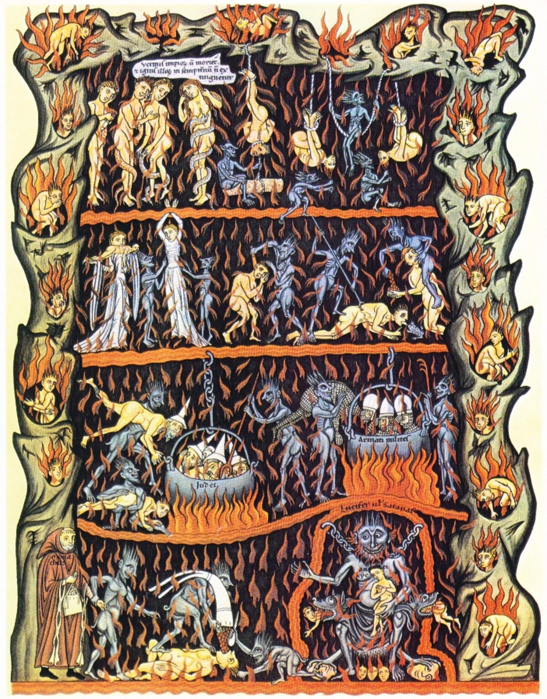
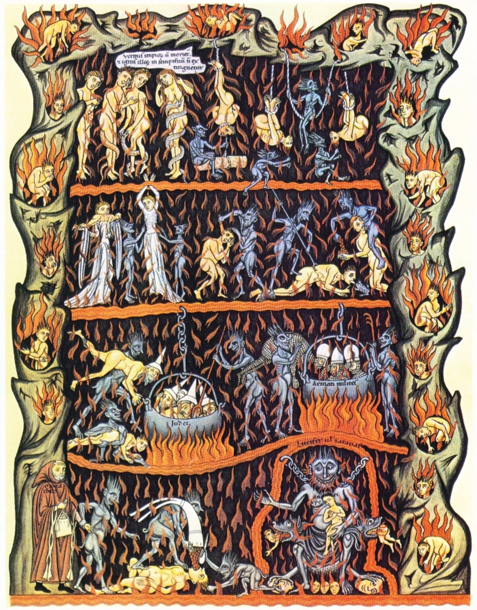
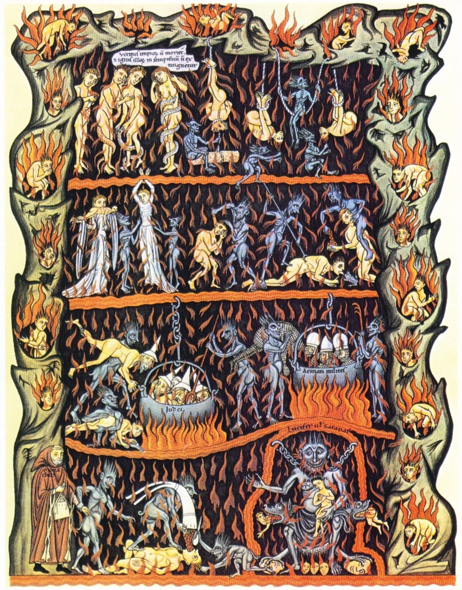

Gallary

 

a place regarded in various religions as a spiritual realm of evil and suffering, often traditionally depicted as a place of perpetual fire beneath the earth where the wicked are punished after death. "irreligious children were assumed to have passed straight to the eternal fires of hell".
